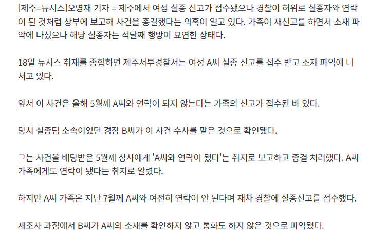

https://n.news.naver.com/article/003/0014134479?cds=news_edit (기사원문)
이게 무슨 사건이냐면

경찰이 실종신고를 접수햇는데 "연락됫어요" 라고 구라로 보고하고 종결처리한 사건임
https://n.news.naver.com/article/003/0014134479?cds=news_edit (기사원문)
이게 무슨 사건이냐면

경찰이 실종신고를 접수햇는데 "연락됫어요" 라고 구라로 보고하고 종결처리한 사건임
댓글
수집 당시 댓글 4개
미니유리 · 2 일 전
순사
시공의포옥풍 · 2 일 전
한림읍 저기 존나 우범지역임 항구껴 있어가지고 어선이 줫나 많은디 얼굴 구분도 안가는 외노자들이 지천에 깔려 있음 밤이면 가로등도 하나 없고 걍 시발 남자도 밤 늦게 다니다간 좆되는 곳임
북두신켄 · 2 일 전
견찰수준
개붕야호 · 1 일 전
ㅡ견ㅡ